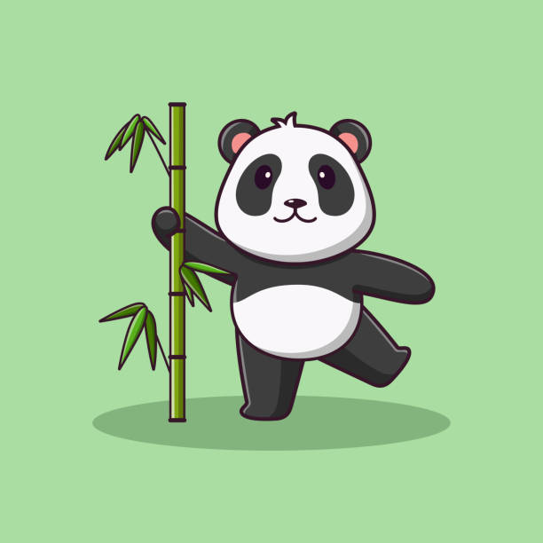

1. memasang gambar pada halaman

2. format gambar yang didukung
- APNG - Animated Portable Network Graphics
- ICO - Microsoft Icon (.ico, .cur)
- JPEG - Untuk foto dan gambar kompleks
- PNG - Untuk transparansi dan kualitas tinggi
- GIF - Untuk animasi sederhana
- SVG - Untuk grafis vektor
- WeBP - Format modern dengan kompresi baik
3. mengambil file gambar pada harddisk
4. menyisipkan gambar pada paragraf
teks mengelilingi gambar gambar yang ditempatkan di dalam paragraf.
gunakan properti CSS float untuk mengatur tata letak.
5. image map

6. membuat link pada gambar
7. gambar sebagai link

8. auto thumbnail
9. gambar dengan style
10. gambar dengan berbagai bentuk
- lingkaran
- sudut melengkung
- belah ketupat